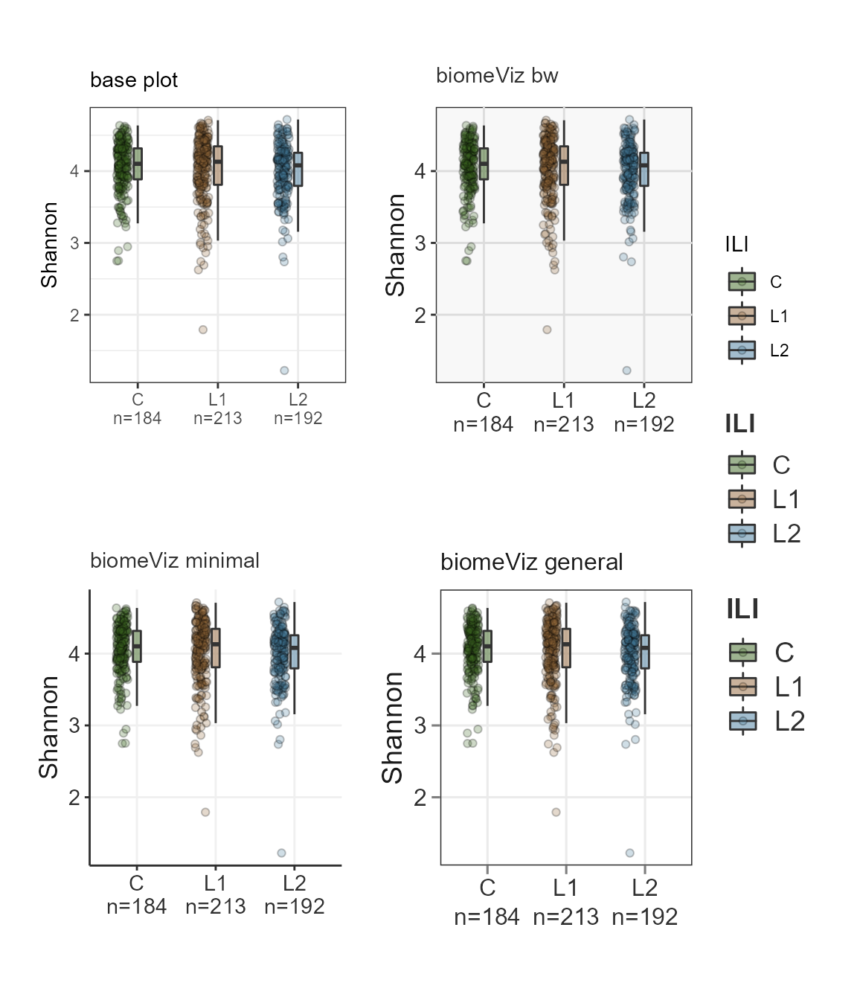
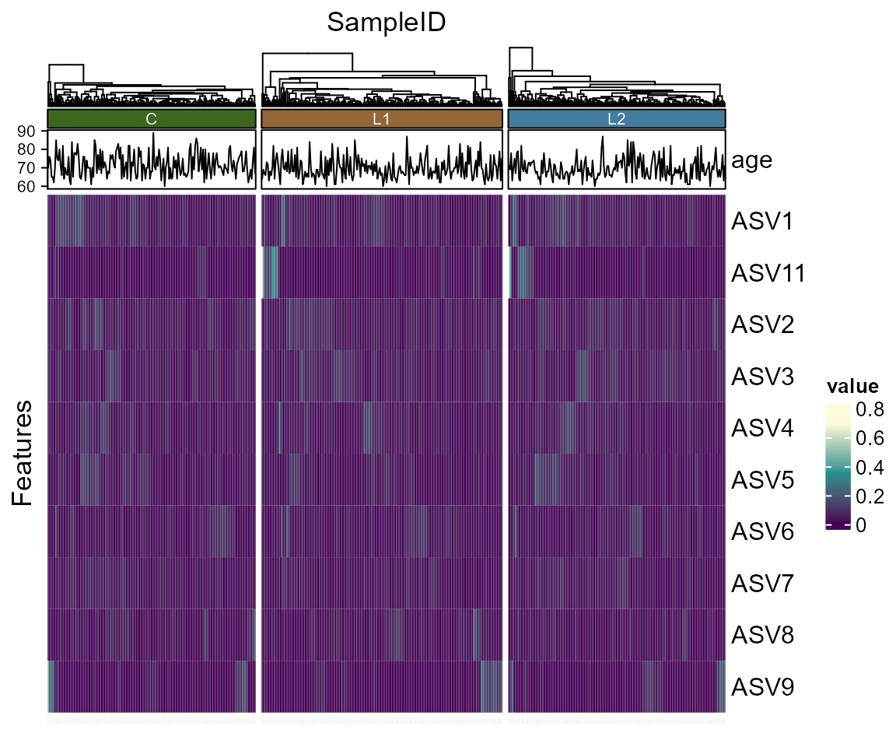

Introduction
Introduction.Rmd
library(biomeViz)
#> Loading required package: phyloseq
#> Loading required package: biomeUtils
#> Loading required package: microbiome
#> Loading required package: ggplot2
#> Warning: package 'ggplot2' was built under R version 4.1.1
#>
#> microbiome R package (microbiome.github.com)
#>
#>
#>
#> Copyright (C) 2011-2020 Leo Lahti,
#> Sudarshan Shetty et al. <microbiome.github.io>
#>
#> Attaching package: 'microbiome'
#> The following object is masked from 'package:ggplot2':
#>
#> alpha
#> The following object is masked from 'package:base':
#>
#> transformCategorical and numeric plot
Visualize one categorical column and one numeric column in sample_data.
library(biomeUtils)
library(biomeViz)
library(dplyr)
library(microbiome)
library(ggplot2)
library(gghalves)
ps <- FuentesIliGutData
# calculate Shannon diversity using microbiome::diversity and add it to
# the sample_data in phyloseq using biomeUtils::mutateSampleData()
ps <- mutateSampleData(ps,
Shannon = microbiome::diversity(ps, "shannon")[,1])
plotByGroup(ps,
x.factor="ILI",
y.numeric = "Shannon") +
gghalves::geom_half_point(
ggplot2::aes_string(fill="ILI"),
side = "l",
range_scale = .4,
alpha = 0.25,
shape = 21) +
scale_fill_manual(values = c("#3d6721", "#a86826", "#006c89"), guide = "none")
Top features
Plot the features with the highest abundance in all samples.
library(biomeUtils)
library(biomeViz)
plotTopAbundant(SprockettTHData,
taxa_level = "Family",
top=15L,
aes(color=Phylum))
Heatmap
library(biomeUtils)
library(biomeViz)
library(microbiome)
library(dplyr)
library(tidyHeatmap)
# Transform to relative abundance
ps <- FuentesIliGutData %>%
microbiome::transform("compositional")
# Select taxa to plot. This avoid overcrowding
select_taxa <- findTopTaxa(ps, top= 10, method="mean")
p <- plotTidyHeatmap(ps, select_taxa = select_taxa,
group_samples_by = "ILI",
add_taxa_label = FALSE,
cluster_rows = FALSE,
.scale = "none", # no scaling only relative abundance
transform = NULL,
palette_grouping = list(c("palegreen3", "steelblue", "brown3"))) %>%
add_line(age)
p
Raincloud
Rain clouds are effective to visualize data. Read more about their utility here Allen M, Poggiali D, Whitaker K et al. Raincloud plots: a multi-platform tool for robust data visualization [version 2; peer review: 2 approved]. Wellcome Open Res 2021, 4:63 link
library(biomeUtils)
library(biomeViz)
library(microbiome)
library(ggplot2)
library(dplyr)
ps <- FuentesIliGutData %>%
microbiome::aggregate_taxa("Genus") %>%
microbiome::transform("compositional")
plotTaxaRaincloud(ps,
taxa ="Bacteroides",
group_samples_by = "ILI",
opacity = 0.25,
shape_point = 21) + # combine with ggplot2 for improvements
labs(y = "Relative abundance",
x = "",
subtitle = expression(paste("Raincloud plot showing the distribution of ",italic("Bacteroides")))) +
theme_biomViz()+
scale_fill_manual(values = c("#3d6721", "#a86826", "#006c89"), guide = "none") +
scale_color_manual(values = c("#3d6721", "#a86826", "#006c89"), guide = "none") +
theme(plot.subtitle = element_text(margin = margin(t = 5, b = 10)),
plot.margin = margin(10, 25, 10, 25)) 
Plot CLR abundance of multiple taxa.
ps <- FuentesIliGutData %>%
microbiome::aggregate_taxa("Genus") %>%
microbiome::transform("clr")
taxa.to.plot <- c("Bacteroides","Blautia","Roseburia","Faecalibacterium")
plotTaxaRaincloud(ps,
taxa = taxa.to.plot,
group_samples_by = "ILI",
opacity = 0.25,
shape_point = 21) + # combine with ggplot2 for improvements
labs(y = "CLR Abundance",
x = "") +
theme_biomViz() +
theme(strip.text = element_text(face = "italic")) +
scale_fill_manual(values = c("#3d6721", "#a86826", "#006c89"), guide = "none") +
scale_color_manual(values = c("#3d6721", "#a86826", "#006c89"), guide = "none") 
PCoA plot
A Principal Coordinates Analysis for phyloseq object. To visualize similarities/dissimilarities between samples in 2D ordination. This function extends the phyloseq ordination plots to include taxa that correlate with chosen axis and plots them along with a side boxplot for comparing inter-sample variation within groups.
library(biomeUtils)
library(dplyr)
library(ggside)
#> Warning: package 'ggside' was built under R version 4.1.1
#> Registered S3 method overwritten by 'ggside':
#> method from
#> +.gg ggplot2
ps <- FuentesIliGutData %>%
microbiome::transform("compositional") %>%
mutateTaxaTable(FeatureID = taxa_names(FuentesIliGutData))
plotPCoA(x =ps,
group_var = "ILI",
ord_method = "PCoA",
dist_method = "bray",
seed = 1253,
cor_method = "spearman",
verbose = TRUE,
padj_cutoff = 0.05,
padj_method = "fdr",
arrows = TRUE,
label_col = "grey30",
plot_centroids = TRUE,
add_side_box = TRUE,
axis_plot = c(1:2),
point_shape = 21, # point_shape
point_alpha = 0.5) +
theme_biomViz() +
scale_color_manual(values = c("#3d6721", "#a86826", "#006c89")) +
scale_fill_manual(values = c("#3d6721", "#a86826", "#006c89"))
#> Random number for permutation analysis ...
#> 1253
#> Warning in .check_taxa_axis(axis.a.tax, axis.b.tax): Second of the choosen axis
#> in `axis_plot` has no taxa satisfying criteria to plot
sessionInfo()
#> R version 4.1.0 (2021-05-18)
#> Platform: x86_64-w64-mingw32/x64 (64-bit)
#> Running under: Windows 10 x64 (build 19043)
#>
#> Matrix products: default
#>
#> locale:
#> [1] LC_COLLATE=English_United States.1252
#> [2] LC_CTYPE=English_United States.1252
#> [3] LC_MONETARY=English_United States.1252
#> [4] LC_NUMERIC=C
#> [5] LC_TIME=English_United States.1252
#>
#> attached base packages:
#> [1] stats graphics grDevices utils datasets methods base
#>
#> other attached packages:
#> [1] ggside_0.1.2 tidyHeatmap_1.3.1 gghalves_0.1.1 dplyr_1.0.6
#> [5] biomeViz_0.0.03 biomeUtils_0.012 microbiome_1.14.0 ggplot2_3.3.5
#> [9] phyloseq_1.36.0
#>
#> loaded via a namespace (and not attached):
#> [1] Rtsne_0.15 colorspace_2.0-1 rjson_0.2.20
#> [4] ellipsis_0.3.2 rprojroot_2.0.2 circlize_0.4.13
#> [7] XVector_0.31.1 GlobalOptions_0.1.2 fs_1.5.0
#> [10] clue_0.3-59 farver_2.1.0 ggrepel_0.9.1
#> [13] bit64_4.0.5 fansi_0.4.2 codetools_0.2-18
#> [16] splines_4.1.0 doParallel_1.0.16 cachem_1.0.5
#> [19] knitr_1.36 ade4_1.7-16 jsonlite_1.7.2
#> [22] Cairo_1.5-12.2 cluster_2.1.2 png_0.1-7
#> [25] ggdist_3.0.0 compiler_4.1.0 assertthat_0.2.1
#> [28] Matrix_1.3-3 fastmap_1.1.0 htmltools_0.5.2
#> [31] prettyunits_1.1.1 tools_4.1.0 igraph_1.2.6
#> [34] gtable_0.3.0 glue_1.4.2 GenomeInfoDbData_1.2.6
#> [37] reshape2_1.4.4 fastmatch_1.1-3 Rcpp_1.0.7
#> [40] Biobase_2.51.0 jquerylib_0.1.4 pkgdown_1.6.1
#> [43] vctrs_0.3.8 Biostrings_2.59.4 rhdf5filters_1.3.5
#> [46] multtest_2.47.0 ape_5.5 nlme_3.1-152
#> [49] DECIPHER_2.20.0 iterators_1.0.13 xfun_0.23
#> [52] stringr_1.4.0 lifecycle_1.0.1 phangorn_2.7.1
#> [55] dendextend_1.15.1 zlibbioc_1.37.0 MASS_7.3-54
#> [58] scales_1.1.1 ragg_1.1.3 hms_1.1.1
#> [61] parallel_4.1.0 biomformat_1.20.0 rhdf5_2.35.5
#> [64] RColorBrewer_1.1-2 ComplexHeatmap_2.8.0 yaml_2.2.1
#> [67] gridExtra_2.3 memoise_2.0.0 sass_0.4.0
#> [70] stringi_1.6.2 RSQLite_2.2.8 highr_0.9
#> [73] S4Vectors_0.29.19 desc_1.4.0 foreach_1.5.1
#> [76] permute_0.9-5 BiocGenerics_0.38.0 shape_1.4.6
#> [79] GenomeInfoDb_1.28.4 rlang_0.4.11 pkgconfig_2.0.3
#> [82] systemfonts_1.0.3 bitops_1.0-7 matrixStats_0.61.0
#> [85] distributional_0.2.2 evaluate_0.14 lattice_0.20-44
#> [88] purrr_0.3.4 Rhdf5lib_1.13.7 labeling_0.4.2
#> [91] bit_4.0.4 tidyselect_1.1.1 plyr_1.8.6
#> [94] magrittr_2.0.1 R6_2.5.1 IRanges_2.25.11
#> [97] generics_0.1.0 picante_1.8.2 DBI_1.1.1
#> [100] pillar_1.6.3 withr_2.4.2 mgcv_1.8-35
#> [103] survival_3.2-11 RCurl_1.98-1.3 tibble_3.1.2
#> [106] crayon_1.4.1 utf8_1.2.1 rmarkdown_2.11
#> [109] viridis_0.6.2 GetoptLong_1.0.5 progress_1.2.2
#> [112] grid_4.1.0 data.table_1.14.0 blob_1.2.2
#> [115] vegan_2.5-7 digest_0.6.27 tidyr_1.1.3
#> [118] textshaping_0.3.6 stats4_4.1.0 munsell_0.5.0
#> [121] viridisLite_0.4.0 bslib_0.3.1 quadprog_1.5-8